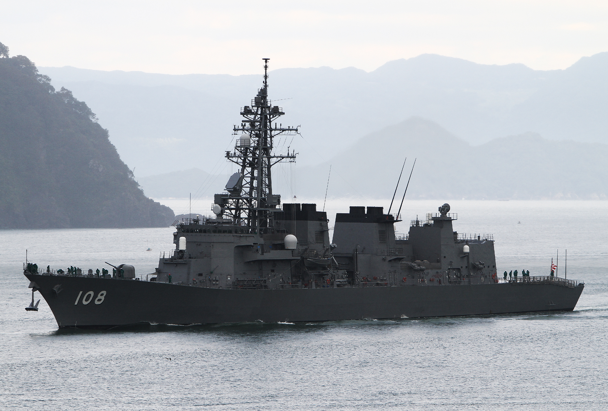

1901年に開かれた鎮守府のひとつ。日本海に面し、若狭湾に抱かれた入り組んだ地形と、小高い山々に囲まれた天然の良港が特徴です。
戦前は軍港として発展し、戦後も造船や海上自衛隊の拠点として重要な役割を担ってきました。現在も日本海側における安全保障上の要所として位置づけられています。
現在も、日本海側を守る重要な拠点のひとつです。舞鶴地方隊を中心に、海上自衛隊の護衛艦や補給艦などが配備され、災害派遣や国際任務にも対応しています。
また、軍港都市としての歴史を活かした観光まちづくりも進んでおり、赤れんが倉庫群や引揚記念館などが整備されています。港周辺では海軍カレーや肉じゃがなどのご当地グルメも人気で、歴史と文化が融合した魅力ある港町として親しまれています。
| 年代 | 出来事 |
|---|---|
| 1895年 | 舞鶴港が軍港として調査される |
| 1901年 | 舞鶴鎮守府設置、正式に開庁（四大鎮守府のひとつ） |
| 1904–1905年 | 日露戦争で艦隊の後方支援基地となる |
| 1920年代 | 造船・修理機能が拡充される |
| 1945年 | 終戦とともに一時的に活動を停止 |
| 1950年 | 朝鮮戦争を契機に舞鶴基地が再び重要に |
| 1952年 | 海上自衛隊舞鶴地方隊が設置される |
| 現在 | 海上自衛隊の拠点、日本海側の安全保障拠点 |
舞鶴では、駆逐艦や護衛艦など中型艦艇の整備・修理を中心に行っていました。舞鶴は終戦直後、シベリアなどからの引揚者を受け入れる主要港となりました。約66万人もの引揚者が舞鶴港を経て帰国したため、「引揚の港」として広く知られるようになった。
旧海軍の倉庫群を活用した施設。明治・大正時代に建てられた赤れんが倉庫が整備され、舞鶴の歴史や文化を体感できる観光名所。ミュージアムやカフェも併設されています。
シベリア抑留からの帰還者を迎えた舞鶴の歴史を伝える施設。ユネスコ「世界の記憶」に登録された資料を保管・展示しています。
日清・日露戦争から太平洋戦争までの戦没者を祀る海軍墓地。静かで荘厳な空気の中、舞鶴の軍港としての歴史を感じることができます。
旧海軍の建物を活用した資料館で、舞鶴鎮守府や海上自衛隊の歴史、活動などを模型や展示資料で学ぶことができます。